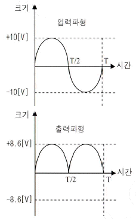
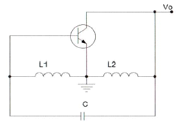
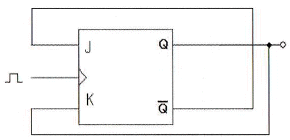
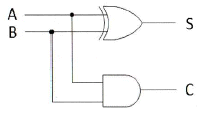
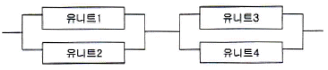
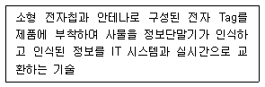
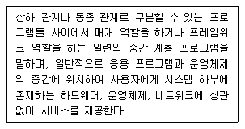
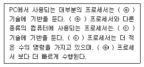
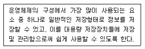

정보통신기사(구) (2014-10-04 기출문제)
1과목: 디지털 전자회로
1. 정류회로의 부하에 병렬로 콘덴서를 연결한 용량성평활회로의 경우 부하저항이 감소하면 리플 전압은 어떻게 변화하는가?
- 리플이 증가한다.
- 리플이 감소한다.
- 리플의 증가와 감소가 반복한다.
- 변화가 없다.
(정답률: 78%)

2. 다음 중 스위칭 정전압 회로에 대한 설명으로 틀린 것은?
- 스위칭 정전압 회로는 직렬 정전압 회로에 비하여 소형ㆍ경량이나, 트랜지스터의 컬렉터 손실이 크게 되어 효율성이 나쁘다.
- 스위칭 정전압 회로를 흔히 SMPS(Switching Mode Power Supply)라고 부르기도 한다.
- 직렬 정전압 회로와 차이점은 제어 트랜지스터가 연속적인 전류를 흘리는 것이 아니라 단속(On-Off)적으로 전류를 흘린다.
- 스위칭 트랜지스터의 이미터에 흐르는 전류는 펄스 형태로 나타난다.
(정답률: 70%)
3. 다음 중 아래 그림과 같은 입ㆍ출력 파형 특성을 만족시키는 정류 회로는? (단, 다이오드의 장벽전압은 0.7[V]이고, 변압기의 권선비는 1:1로 가정한다.)

- 반파정류회로
- 중간탭 전파정류회로
- 브리지 전파정류회로
- 용량성 필터를 갖는 반파정류회로
(정답률: 64%)
4. 다음 중 영 바이어스(Zero Bias)된 B급 푸시풀(Push-Pull) 증폭기에서 발생되는 왜곡의 원인으로 가장 적합한 것은?
- 주파수 일그러짐
- 진폭 일그러짐
- 교차 일그러짐
- 위상 일그러짐
(정답률: 50%)
5. 다음 중 이상적인 연산증폭기에 대한 설명으로 틀린 것은?
- 입력 임피던스는 무한대(∞)이다.
- 출력 임피던스는 0이다.
- 공통모드제거비(CMRR)는 0이다.
- 대역폭이 무한대(∞)이다.
(정답률: 73%)
6. 전압이득이 40[dB]이고 차단주파수가 400[kHz]인 개루프(Open Loop) 증폭기에 부궤환 회로를 사용하여 전압이득이 20[dB]로 감소되었을 경우 폐루프(Closed-Loop) 증폭기의 차단주파수는? (문제 오류로 실제 시험에서는 모두 정답처리 되었습니다. 여기서는 1번을 누르면 정답 처리 됩니다.)
- 800[kHz]
- 600[kHz]
- 400[kHz]
- 200[kHz]
(정답률: 83%)
7. 다음 중 전치 증폭기에 대한 설명으로 틀린 것은?
- 출력신호를 1차 증폭시킨다.
- 초기신호를 정형한다.
- 고출력 증폭용으로 사용된다.
- 일반적으로 종단 증폭기에 비해 중폭률이 낮다.
(정답률: 56%)
8. 다음 중 발진회로를 구성하는 요소가 아닌 것은?
- 위상천이회로
- 정궤환회로
- RC타이밍회로
- 감쇄회로
(정답률: 70%)
9. 다음 그림과 같은 회로에서 결합계수가 0.5이고, 발진주파수가 200[kHz]일 경우 C의 값은 얼마인가? (단, π=3.14이고, L1=L2=1[mH]로 가정한다.)

- 211.3[μF]
- 211.3[pF]
- 422.6[μF]
- 422.6[pF]
(정답률: 64%)
10. 다음 중 단측파대 변조 방식의 특징으로 틀린 것은?
- 점유주파수 대역폭이 매우 작다.
- 복조를 할 경우 반송파의 동기가 필요하다.
- 송신출력이 비교적 적어도 된다.
- 전송 도중에 복조되는 경우가 있다.
(정답률: 78%)
11. 다음 중 디지털 변조방식에 대한 설명으로 틀린 것은?
- ASK 방식은 반송파의 진폭을 변화시키는 방식으로 장거리 및 대용량 전송에는 적합하지 않다.
- FSK 방식은 반송파의 주파수를 변화시키는 방식으로 전송로의 영향을 많이 받기 때문에 전송로 상태가 열악한 통신에는 적합하지 않다.
- PSK 방식은 반송파의 위상을 변화시키는 방식으로 심볼에러가 우수하고 전송로 등에 의한 레벨 변동에 영향을 적게 받는다.
- QAM 방식은 반송파의 진폭과 위상을 상호 변환하여 싣는 방식으로 제한된 전송 대역 내에서 고속 전송에 유리하다.
(정답률: 61%)
12. 다음 중 단안정 멀티바이브레이터에 대한 설명으로 틀린 것은?
- 두 증폭단 사이에 AC 결합과 DC 결합이 함께 쓰인다.
- 회로의 시정수로 주기가 결정된다.
- 정상 상태에서 한 개의 TR이 On이면 다른 TR은 Off이다.
- 1개의 펄스가 인가되면 2개의 안정상태를 유지한다.
(정답률: 77%)
13. 다음 중 펄스에 대한 설명으로 틀린 것은?
- 짧은 시간에 전압 또는 전류의 진폭이 급격하게 변화하는 파형이다.
- 충격파, 직사각형파, 톱니파, 계단파 등이 있다.
- 전아이나 전류의 성분이 양인 양(+)펄스와 음인 음(-)펄스가 있다.
- 펄스에는 고조파가 포함되지 않는다.
(정답률: 76%)
14. JK Flip Flop을 그림과 같이 결선하였을 경우 클럭 펄스가 인가될 때마다 Q의 출력상태는 어떻게 동작하는가?

- Toggle
- Reset
- Set
- Race 현상
(정답률: 75%)
15. 다음 중 부울대수의 정리가 성립되지 않는 것은?
- A+B = B+A
- AㆍB = A(A+B)
- A(B+C) = AB+AC
- A+(BㆍC) = (A+B)(A+C)
(정답률: 80%)
16. 2진수 1110을 2의 보수로 변환한 것으로 맞는 것은?
- 1010
- 1110
- 0001
- 0010
(정답률: 83%)
17. 비동기식 5진 계수회로는 최소 몇 개의 플립플롭이 필요한가?
- 4
- 3
- 2
- 1
(정답률: 85%)
18. 다음 그림의 회로명칭은 무엇인가?

- 반가산기
- 반감산기
- 전가산기
- 전감산기
(정답률: 79%)
19. 10진 BCD 코드를 LED 출력으로 표시하려면 어떤 디코더 드라이브가 필요한가?
- BCD-10세그먼트
- Octal-10세그먼트
- BCD-7세그먼트
- Octal-7세그먼트
(정답률: 81%)
20. 다음 중 디지털 컴퓨터(Digital Computer)의 보조 기억장치가 아닌 것은?
- 자기 드럼(Magnetic Drum)
- 자기 테이프(Magnetic Tape)
- 자기 디스크(Magnetic Disk)
- 자기 코어(Magnetic Core)
(정답률: 80%)
2과목: 정보통신 시스템
21. 다음 중 DSU(Digital Service Unit)의 기능으로 옳은 것은?
- 디지털 데이터를 디지털 신호로 변환
- 아날로그 데이터를 디지털 신호로 변환
- 디지털 신호를 아날로그 데이터로 변환
- 아날로그 신호를 디지털 데이터로 변환
(정답률: 85%)
22. 정보통신망을 구성할 때 두 개 이상 다수의 단말기가 하나의 통신회선에 연결되어 정보의 송ㆍ수신을 행하는 통신방식은 무엇인가?
- 멀티포인트 방식
- 멀티플렉싱 방식
- 포인트 투 포인트 방식
- 집중 방식
(정답률: 67%)
23. 70개의 노드를 망형으로 연결할 때 필요한 회선 수는?
- 780
- 1,225
- 2,415
- 3,610
(정답률: 88%)
24. 표준화 단체인 IETF가 인터넷 표준을 개발하여 완성한 표준문서를 무엇이라 하는가?
- RFC
- NFC
- TFC
- IFC
(정답률: 81%)
25. 프로토콜의 주요 구성요소 중에서 데이터의 구조나 형식 등을 규정하는 것은 무엇인가?
- 타이밍
- 구문
- 의미
- 표준
(정답률: 81%)
26. PPP(Point-to-Point Protocol)에서 IP의 동적 협상이 가능하도록 하는 프로토콜은?
- NCP(Network Control Protocol)
- LCP(Link Control Protocol)
- SLIP(Serial Line IP)
- PPPoE(Point to Point Protocol over Ethernet)
(정답률: 80%)
27. OSI 7 계층 중 전송계층의 주요 기능으로 옳은 것은?
- 동기화
- 프로세스 대 프로세스 전달
- 노드 대 노드 전달
- 라우팅 테이블의 생성과 유지
(정답률: 82%)
28. OSI 7 계층에서 가장 하위 레벨의 계층은?
- 전송 계층
- 표현 계층
- 데이터링크 계층
- 물리 계층
(정답률: 90%)
29. 다음 중 VoIP 기술의 특징에 대한 설명으로 옳지 않은 것은?
- PSTN에 비해 요금이 저렴하다.
- 이미 구축된 인터넷 장비를 활용함으로써 구축 비용이 상대적으로 저렴하다.
- 인터넷과 연계된 다양한 부가 서비스 기능이 가능하다.
- 기능 및 동작이 PSTN에 비해 단순하고, 보안에 강하다.
(정답률: 82%)
30. 다음 중 교환기의 과금처리 방식 중 하나인 중앙집중처리방식(CAMA)에 대한 설명으로 틀린 것은?
- 다수의 교환국망일 때 유리하다.
- 신뢰성이 좋은 전용선이 필요하다.
- 유지보수에 많은 시간이 소요된다.
- 과금센터 구축에 큰 경비가 들어간다.
(정답률: 75%)
31. 다음 중 무선 인터넷에서 사용하는 Markup 언어에 대한 설명으로 틀린 것은?
- 무선 인터넷 사이트 구축을 위한 언어는 HDML(Handheld Device Markup Language)이다.
- mHTML(microsoft HTML)은 마이크로소프트에서 무선 인터넷을 위해 기존의 HTML의 많은 기능 삭제한 경량급 언어이다.
- XML(eXtensible Markup Language)는 WAP 포럼에서 정의한 HTML과 유사한 작은 크기의 Markup 언어이다.
- xHTML(eXtensible HTML)은 인터넷 표준 제정 단체인 W3C가 발표한 표준안으로 XML 표준을 따르면서 HTML과 호환되도록 짜여진 언어이다.
(정답률: 69%)
32. 다음 중 USN의 구성요소로 적합하지 않은 것은?
- 센서노드(Sensor Node)
- 싱크노드(Sink Node)
- 게이트웨이(Gateway)
- RFID 서버(Server)
(정답률: 70%)
33. 다음 중 도메인 네임(Domain Name)에 대한 설명으로 잘못된 것은?
- IP 주소 대신 쉽게 기억할 수 있고, 이용도 쉽게 할 수 있도록 이름을 부여한 것이다.
- 소속 기관이나 국가에 따라서 계층적으로 형성되어 있다.
- 호스트 명, 소속단체, 단체성격, 소속국가의 형태를 가지고 있다.
- 오른쪽으로 갈수록 하위 도메인에 속한다.
(정답률: 87%)
34. 이동통신망 셀(Cell) 중 마이크로 셀(Micro Cell)의 반지름 범위는 얼마인가?
- 50[m] 이내
- 0.5~1[km] 이내
- 35[km] 이내
- 100~500[km] 이내
(정답률: 80%)
35. 다음 중 기업이 부가가치통신망(VAN)을 이용하는 목적이 아닌 것은?
- 이기종 호스트 컴퓨터간 접속, 단말기의 접속 프로토콜 변환 등을 네트워크에서 함으로써 기업의 서버부하 경감
- 데이터 통신 효율 향상을 통한 통신비용 절감
- 전화서비스의 안정적 이용
- 회선의 확장, 변경, 운용을 VAN업체에 위탐함에 따른 기업 내 업무 효율화
(정답률: 79%)
36. 다음 중 LAN(Local Area Network)의 특성이 아닌 것은?
- 고속 통신이 가능하다.
- 구성 및 연결, 사용 방법이 복잡하다.
- 패킷 지연이 최소화된다.
- 네트워크 유지, 보수, 운용이 용이하다.
(정답률: 85%)
37. 어떤 시스템에서 신뢰도를 높이기 위해 중복시스템을 채용하고 있다. 이 시스템에서 유니트1 또는 3이 고장을 일으키면 자동적으로 유니트2 또는 4로 바뀐다. 유니트1, 2, 3, 4의 신뢰도를 각각 [0.8], [0.8], [0.9], [0.9]라 할 때 이 시스템의 신뢰도는 얼마인가?

- 0.9684
- 0.9504
- 0.5184
- 0.0684
(정답률: 77%)
38. 다음 중 네트워크 보안기술로 적합한 것은?
- VPN
- 스니핑
- 스푸핑
- DoS(Denial of Service)
(정답률: 89%)
39. 네크워크관리시스템(NMS) 운용 중 현장 Access 설비로부터 1분당 평균 20개의 패킷이 전송되어 오고 있다. 이 스테이션에서의 처리 시간이 1패킷당 평균 2초라 할 때 시스템의 이용률은?
- 1/3
- 2/3
- 1/6
- 5/6
(정답률: 91%)
40. 통신망 관리 시스템 네트워크 내에서 소통되는 호, 설비 및 변동상황 등을 파악ㆍ관리하며 네트워크의 설비 설계, 폭주 관리 설비 및 소통 관리 등의 역할을 갖는 시스템으로 적합한 것은?
- 가입자 시설 집중 운용 분산 시스템(Subscriber Line maintenance and Operatin System)
- 장거리 회선 감시 제어 및 운용 관리 시스템
- 트래픽 집중 관리 시스템(Centralized Traffic Management System)
- 네트워크 트래픽 시스템(Network Tranffic System)
(정답률: 77%)
3과목: 정보통신 기기
41. 다음 지문은 정보단말기의 어떤 기술을 설명한 것인가?

- IPTV
- PLC
- RFID
- HSDPA
(정답률: 89%)
42. 다음 중 통신제어처리장치의 설명이 아닌 것은?
- 프로그래밍에 의해 복잡한 제어를 용이하게 한다.
- 통신제어 장치를 개선한 것이다.
- 프로그램 제어가 가능한 소형의 중앙처리장치를 사용한다.
- 컴퓨터 상호간이나 다른 컴퓨터를 원격처리 할 목적으로 사용된다.
(정답률: 78%)
43. Zigbee 네트워크 내에서 반드시 하나만 존재하는 것으로 네트워크 정보의 초기화를 담당하는 것은 무엇인가?
- 코디네이터(Coordinator)
- 라우터(Router)
- 게이트웨어(Gateway)
- 단말장치(Data Terminal)
(정답률: 82%)
44. 입력회선이 10개인 집중화기에서 출력회선을 몇 개까지 설계할 수 있는가?
- 10
- 11
- 13
- 15
(정답률: 87%)
45. 다음 중 T1급 혹은 E1급 전용선을 사용하여 네트워크를 구축할 경우 적합한 디지털 전송장비는?
- CSU
- MODEM
- CCU
- CODEC
(정답률: 69%)
46. 다음은 ADSL의 변조방식인 DMT와 CAP 방식을 비교한 것이다. CAP 방식에 대한 설명으로 옳은 것은?
- 가격이 상대적으로 저렴하다.
- 전력소모가 크며 열이 많이 발생한다.
- 각 채널별로 변조가 이루어지기 때문에 빠른 속도를 제공한다.
- 각 단위 채널이 제공하는 속도에 한계가 있어 지연속도가 크다.
(정답률: 38%)
47. 단말기에서 모뎀으로 데이터를 보내기 위한 신호는?
- RTS(Request To Send)
- CTS(Clear To Send)
- DCE(Data Circuit Equipment)
- DSR(Data Set Request)
(정답률: 81%)
48. 다음 중 모뎀의 송신기 구성요소가 아닌 것은?
- 스크램블러
- 변조기
- 필터
- 등화기
(정답률: 65%)
49. 유선 전화망의 구성 요소로 교환기와 단말기를 연결시켜 주고 신호와 정보를 전달하는 것은 무엇인가?
- 가입자 선로
- 중계 선로
- 스위치
- 프로그램 기억장치
(정답률: 71%)
50. 다음 중 단말기와 방송국 간의 데이터를 송수신할 수 있는 CATV 시스템으로 적합한 것은?
- 공동수신 CATV
- 자주방송 CATV
- 재송신 CATV
- 양방향 CATV
(정답률: 81%)
51. 전자교환기에서 중앙제어장치의 명령에 따라 통화로를 완성하고 감시하는 기능을 하는 것은 무엇인가?
- 트렁크
- 중앙제어장치
- 통화제어장치
- 주사장치
(정답률: 68%)
52. 디지털 화상회의 시스템에서 QCIF 포맷을 흑백화면으로 25프레임, 8비트로 샘플링을 할 경우 전송률은 약 얼마인가?
- 5[Mbps]
- 10[Mbps]
- 20[Mbps]
- 40[Mbps]
(정답률: 66%)
53. 다음 중 디지털 지상파 TV방송의 전송방식이 아닌 것은?
- ATSC
- DVB-H
- ISDB-T
- DMB-T/H
(정답률: 76%)
54. 다음 중 영상통신기기의 ‘보안’사항으로 관련이 없는 것은?
- 무결성(Integrity)
- 신빙성(Authenticity)
- 암호화(Encryption)
- 품질(Quality)
(정답률: 84%)
55. 다음 중 셀룰러 이동통신 방식에서 기지국 서비스 영역을 확대하는 방법이 아닌 것은?
- 고이득 지향성 안테나를 사용한다.
- 수신기의 수신 한계레벨을 높게 조정한다.
- 다이버시트 수신기를 사용한다.
- 기지국 안테나 높이를 증가시킨다.
(정답률: 71%)
56. 다음 중 이동통신방식의 하나인 LTE(Long Term Evolution) 방식에 대한 설명으로 옳지 않은 것은?
- WCDMA에서 진화한 기술이다.
- CDMA2000계열 방식이다.
- HSPA+와 더불어 3.9세대 무선이동통신규격이라고 한다.
- OFDM과 MIMO는 이 방식에서 사용되는 핵심기술이다.
(정답률: 76%)
57. 지구국으로부터 통신위성까지의 거리가 36,000[km]일 때, 이 지구국에서 발사된 전파가 통신위성을 경유하여 지구국에 도착할 때까지 걸리는 이론적 시간은 얼마인가? (단, 지구국과 통신위성 장치에서 소요되는 시간은 고려하지 않는다.)
- 240[ms]
- 245[ms]
- 250[ms]
- 255[ms]
(정답률: 79%)
58. 다음 중 이동통신기기에 사용하는 PN(Pseudo Noise) 코드에 대한 설명으로 틀린 것은?
- PN코드는 균형성을 가진 의사잡음이다.
- 형태가 무작위인 것 같지만 실제로는 규칙성을 갖는다.
- PN코드는 런특성을 가지고 있다.
- PN코드는 초기동기를 잡는 데는 사용되지 않는다.
(정답률: 80%)
59. 다음 중 멀티미디어 단말의 구성요소가 아닌 것은?
- 처리장치
- 저장장치
- 매체 전송장치
- 오디오, 비디오 캡쳐 장치
(정답률: 44%)
60. 우리나라 DTV 표준에 관한 사항으로 틀린 것은?
- 오디오표준 : Dolby AC-3
- 영상표준 : MPEG-2
- 전송방식 : OFDM
- 채널당 대역폭 : 6[MHz]
(정답률: 71%)
4과목: 정보전송 공학
61. 양자화 스텝수가 6비트이면 양자화 계단수(M)는 얼마인가?
- 16
- 64
- 32
- 8
(정답률: 85%)
62. 세계 최초로 국내에서 상용화된 WiBro의 다중 전송방식 및 송ㆍ수신 Duplex 방식은?
- OFDM/TDD
- CDMA/FDD
- OFDM/FDD
- TDMA/ODD
(정답률: 74%)
63. TDM을 사용하여 5개의 채널을 다중화한다. 각 채널이 100[byte/s]의 속도로 전송하고 각 채널마다 2[byte]씩 다중화하는 경우 초당 전송해야 하는 프레임수와 비트 전송률[bps]은 각각 얼마인가?
- 50개, 2,000[bps]
- 50개, 4,000[bps]
- 100개, 2,000[bps]
- 100개, 4,000[bps]
(정답률: 70%)
64. 다음 중 파장 분할 다중 방식(Wavelength Division Multiplex)에 대한 특징으로 옳지 않은 것은?
- 광 코어의 수를 줄일 수 있다.
- 광 수동소자만으로 구성이 가능하다.
- 양방향 전송이 불가능하다.
- 전송거리가 TDM 방식보다 더 길다.
(정답률: 78%)
65. 다음 중 마이크로파 통신의 특징에 대한 설명으로 옳지 않은 것은?
- 광대역 전송이 가능하다.
- 산악 등 지형장애물의 영향이 적다.
- 지향성 안테나를 사용하며 유선통신에 비해 회선 구성이 용이하다.
- 소형의 고이득 안테나를 사용할 수 있다.
(정답률: 75%)
66. 중계케이블의 통화전압이 55[V]이고 잡음전압이 0.⑤5[V]이면 잡음레벨[dB]은 얼마인가?
- 44[dB]
- 50[dB]
- 55[dB]
- 60[dB]
(정답률: 82%)
67. 다음 중 이동통신에서 나타나는 페이딩 현상으로 맞는 것은?
- 이동체의 움직임에 따라 관측점과 파원의 실효 길이가 변화하게 되어 수신 신호 주파수가 변하는 현상이다.
- 신호 전파의 도달거리 차에 의해 수신 전계강도가 시간적으로 변동하는 현상이다.
- 인접한 이동체간에 동일 주파수 채널을 사용함으로써 발생하는 간섭 현상이다.
- 전파가 전송되는 과정에서 다중 반사되어 나타나는 지연 현상이다.
(정답률: 74%)
68. 빛을 집광하는 능력으로 최대 수광각 범위 내에 입사시키기 위한 광학렌즈의 척도를 무엇이라 하는가?
- 개구수(Numerical Aperture, NA)
- 조리개 값(F-number)
- 분해거리(Resolved Distance)
- 초점심도(Depth of Focus)
(정답률: 79%)
69. 다음 중 4선식 회선에 가장 효율적인 통신 방식은?
- 단방향 통신
- 반이중 통신
- 전이중 통신
- 기저대역 통신
(정답률: 81%)
70. 다음 중 통화로 신호방식(개별선 신호방식)이 아닌 것은?
- R1 방식
- R2 방식
- NO.5 방식
- NO.6 방식
(정답률: 60%)
71. 다음 중 플래그 동기방식에서 프레임의 정보부가 연속적으로 ‘1’이 5개 존재할 경우 그 다음에 ‘0’을 삽입하여 플래그의 비트패턴과 구분되도록 하는 조치는?
- 디스크램블
- 비트 스터핑
- 클록 첨가
- 파일럿
(정답률: 84%)
72. 다음 중 동기식 전송(Synchronous Transmission)에 대한 설명으로 틀린 것은?
- 전송속도가 비교적 낮은 저속 통신에 사용한다.
- 전 블록(또는 프레임)을 하나의 비트열로 전송할 수 있다.
- 데이터 묶음 앞쪽에는 반드시 동기문자가 온다.
- 한 묶음으로 구성하는 글자들 사이에는 휴지 간격이 없다.
(정답률: 79%)
73. 다음 중 네트워크 주소(Network Address)에 대한 설명으로 틀린 것은?
- 라우팅 프로토콜에서 네트워크를 지칭할 때 사용한다.
- IP주소와 서브넷 마스크를 AND 연산한다.
- 네트워크 자체를 의미한다.
- 패킷의 송신 주소나 수신 주소로 사용이 가능하다.
(정답률: 61%)
74. 다음 중 네트워크의 구성 요소로 적합하지 않은 것은?
- 네트워크 케이블
- 네트워크 인터페이스 카드
- 인터네크워킹 장비
- USB 인터페이스
(정답률: 86%)
75. 다음 중 정보 통신망에서 정보를 교환하는 방식이 아닌 것은?
- 회선 교환(Circuit Switching) 방식
- 메시지 교환(Message Switching) 방식
- 패킷 교환(Packet Switching) 방식
- 프레임 교환(Frame Switching) 방식
(정답률: 64%)
76. IP주소가 B Class이고 전체를 하나의 네트워크 망으로 사용하고자 할 경우 서브넷 마스크 값은?
- 255.0.0.0
- 255.255.0.0
- 255.255.255.0
- 255.255.255.255
(정답률: 86%)
77. 다음 중 프로토콜의 이용목적으로 옳지 않은 것은?
- 터미널의 회선접속
- 에러 메시지의 재전송
- 하드웨어 설계 및 구현
- 메시지의 블로킹과 포맷구조
(정답률: 76%)
78. HDLC(High-level Data Link Control) 프로토콜 프레임의 제어부 형식 중 링크 상태의 초기 설정, 데이터 전송 동작 모드의 설정 요구 및 응답과 데이터 링크의 확립 및 절단 등에 사용되는 형식으로 적합한 것은?
- 정보전송 형식(I Frame)
- 감시 형식(S Frame)
- 비번호제 형식(U Frame)
- 시험 형식(T Frame)
(정답률: 76%)
79. 데이터링크 계층(Datalink Layer)에서 전송제어 프로토콜의 절차 단계를 올바르게 표현한 것은?
- 데이터링크 설정 → 회선접속 → 정보전송 → 회선절단 → 데이터링크 해제
- 정보전송 → 회선접속 → 데이터링크 설정 → 데이터링크 해제 → 회선절단
- 회선접속 → 데이터링크 설정 → 정보전송 → 데이터링크 해제 → 회선절단
- 회선접속 → 데이터링크 설정 → 데이터링크 해제 → 회선절단 → 정보전송
(정답률: 81%)
80. 다음 중 패리티 검사(Parity Check)를 하는 이유로 옳은 것은?
- 수신정보 내의 오류 검출
- 전송되는 부호의 용량 검사
- 전송데이터의 처리량 측정
- 통신 프로토콜의 성능 측정
(정답률: 86%)
5과목: 전자계산기일반 및 정보통신설비기준
81. 다음 문장이 의미하는 소프트웨어는 무엇인가?

- 유틸리티
- 디바이스 드라이버
- 응용소프트웨어
- 미들웨어
(정답률: 84%)
82. 10진수 47.625를 2진수로 변환한 것으로 옳은 것은?
- 101111.111
- 101111.010
- 101111.001
- 101111.101
(정답률: 76%)
83. 다음 중 인터럽트의 우선순위가 가장 높은 것은?
- 기계착오
- 외부신호
- SVC
- 전원이상
(정답률: 79%)
84. 다음 중 소프트웨어의 유형과 특징이 올바른 것은?
- 베타버전 : 개발 중인 하드웨어/소프트웨어에 붙는 제품 버전으로 개발 초기 단계에서 개발 기업 내 또는 일반의 사용자에게 배포하여 시험하는 초기 버전
- 알파버전 : 소프트웨어를 정식으로 발표하기 전에 발견하지 못한 오류를 찾아내기 위해 회사가 특정 사용자들에게 배포하는 시험용 소프트웨어
- 프리웨어 : 별도로 판매되는 제품들을 묶어 하나의 패키지로 만들어 판매하는 형태로, 컴퓨터 시스템을 구입할 때 컴퓨터 시스템을 구성하는 하드웨어 장치와 프로그램 등을 모두 하나로 묶어 구입하는 방법
- 공개소프트웨어 : 누구나 자유롭게 사용하고 수정하거나 재배포할 수 있도록 공개하는 소프트웨어로, 누구에게나 이용과 복제, 배포가 자유롭다는 뜻의 소프트웨어
(정답률: 72%)
85. 8비트로 된 레지스터에서 첫째 비트는 부호비트로 0, 1로 양, 음을 나타낸다고 할 때 2의 보수(2's Complement)로 숫자를 표시한다면 이 레지스터로 표현할 수 있는 10진수의 범위로 올바른 것은?
- -127 ~ +127
- -128 ~ +127
- -128 ~ +128
- -128 ~ +129
(정답률: 85%)
86. 다음 문장의 괄호 안에 들어갈 용어로 올바른 것은?

- ⓐ CISC, ⓑ PowerPC, ⓒ RISC
- ⓐ PowerPC, ⓑ CISC, ⓒ RISC
- ⓐ RISC, ⓑ PowerPC, ⓒ CISC
- ⓐ CISC, ⓑ RISC, ⓒ PowerPC
(정답률: 65%)
87. 자외선을 이용하여 지울 수 있는 메모리로 맞는 것은?
- PROM
- EPROM
- EEPROM
- 플래쉬 메모리(Flash Memory)
(정답률: 86%)
88. 운영체제는 동일하지 않은 시스템 구조를 지원하기 위해 여러 시스템의 구성요소들을 제공한다. 이러한 시스템의 구성요소 중 지문을 해당하는 용어로 맞는 것은?

- 파일 관리
- 프로세스 관리
- 주변장치 관리
- 레지스터 관리
(정답률: 69%)
89. CPU 내부에 있는 특수 목적용 레지스터 중 하나로, 인터럽트 수행과정에서 원래의 프로세스가 수행될 수 있도록 프로그램 카운터의 주소를 임시로 저장하는 레지스터를 무엇이라 하는가?
- 명령 레지스터
- 상태 레지스터
- 기억장치 버퍼 레지스터
- 스택 포인터
(정답률: 50%)
90. 기억장치를 동일한 크기의 페이지 단위로 나누고, 페이지 단위로 주소 변환 및 대체를 하는 가상 기억장치 구현방식은 무엇인가?
- 논리 메모리 분할 기법
- 페이징 기법
- 스케줄링 기법
- 세그먼테이션 기법
(정답률: 82%)
91. 다음 중 전기통신기본법의 목적이 아닌 것은?
- 전기통신을 효율적으로 관리
- 전기통신의 발전을 촉진
- 공공복리의 증진에 이바지
- 전기통신기술의 표준 개정
(정답률: 65%)
92. 다음 중 정보통신공사업법에 따른 정보설비공사의 종류에 해당하지 않는 것은?
- 정보망설비공사
- 전송설비공사
- 철도통신ㆍ신호설비공사
- 정보매체설비공사
(정답률: 51%)
93. 다음 중 정보통신공사업의 운영에 대한 설명으로 옳지 않은 것은?
- 공사업을 양도할 수 있다.
- 공사업자인 법인 간에 합병할 수 있다.
- 공사업자인 법인을 분할하여 설립할 수 있다.
- 합병에 의하여 설립된 법인은 소멸되는 법인의 지위를 승계하지 못한다.
(정답률: 84%)
94. 전기통신설비를 이용하여 타인의 통신을 매개하거나 전기통신설비를 타인의 통신용으로 제공하는 것을 무엇이라 하는가?
- 정보통신서비스
- 전기통신서비스
- 전기통신역무
- 정보통신역무
(정답률: 76%)
95. 다음 중 정보통신망의 안정성 및 정보의 신뢰성을 확보하기 위한 정보보호지침에 포함되지 않는 사항은?
- 정보통신망의 안정 및 정보보호를 위한 인력ㆍ조직ㆍ경비의 확보 및 계획수립 등 관리적 보호조치
- 정보의 불법 유출ㆍ변조ㆍ삭제 등을 방지하기 위한 기술적 보호조치
- 정보통신망의 지속적인 이용 가능 상태 확보하기 위한 기술적ㆍ물리적 보호조치
- 전문보안업체를 통한 위탁관리 등 관리적 보호조치
(정답률: 76%)
96. 다음 중 방송통신설비의 옥외설비가 갖추어야 할 신뢰성 및 안전성에 대한 대책이 아닌 것은?
- 동격 대책
- 다자접근 용이성 대책
- 다습도 대책
- 진동 대책
(정답률: 76%)
97. 기간통신사업자는 국선을 몇 회선 이상으로 인입하는 경우에 케이블로 국선수용단자반에 접속ㆍ수용하여야 하는가?
- 3회선
- 5회선
- 7회선
- 9회선
(정답률: 75%)
98. ‘저압’에 대한 용어의 정의로 알맞은 것은?
- 직류 750볼트 이하, 교류는 600볼트 이하
- 직류 600볼트 이하, 교류는 750볼트 이하
- 직류 700볼트 이하, 교류는 650볼트 이하
- 직류 700볼트 이하, 교류는 600볼트 이하
(정답률: 77%)
99. 다음 중 통신관련 시설의 접지저항을 100[Ω] 이하로 할 수 있는 사항이 아닌 것은?
- 국선 수용 회선이 200회선 이하인 주배선반
- 보호기를 설치하지 않는 구내통신 단자함
- 철탑 이외 전주 등에 시설하는 이동통신용 중계기
- 선로설비 중 선조ㆍ케이블에 대하여 일정 간격으로 시설하는 접지 (단, 차폐케이블은 제외한다.)
(정답률: 59%)
100. 다음 중 자가전기통신설비를 설치한 목적 외에 100.사용할 수 있는 경우가 아닌 것은?
- 공공기관에서 비영리를 목적으로 사용하는 경우
- 경찰업무에 종사하는 자가 치안유지를 위하여 사용하는 경우
- 재해구조업무에 종사하는 자가 긴급한 재해구조를 위하여 사용하는 경우
- 설치자와 업무상 특수한 관계에 있는 사람 간에 사용하는 경우로서 미래창조과학부장관이 고시하는 경우
(정답률: 68%)